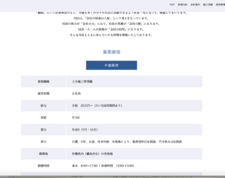
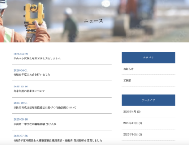

建設会社向け サンプルコーポレートサイト
株式会社サンプル建設
Background
制作背景
- クライアント
- 自社サイトの制作を検討している建設会社
- ターゲット
-
- 地元の民間企業の発注担当者
- 公共案件を検討している自治体
- 目的・狙い
-
- 自社サイトを持っていない建設会社に、導入イメージをもってもらう（対クライアント）
- 自社サイトを設けることで信用性のある企業として認知してもらう（対ターゲット）
- 要望
-
- Webサイトをもつことで信頼性を高めたい。
- 競合他社との差別化を図りたい。
Concept
コンセプト
- 与えたいイメージ
- 堅実、信用性、爽やか
- フォント
- ヒラギノ明朝 ProN
- カラー
-
青や水色系のカラーで統一感をもたせ、堅実性や信用性のある印象を与えられるよう 意識しました。
- ◾️信用性や堅実性を与えるデザイン
- 誠実さや堅実性をイメージさせる青や水色を基調としたカラーをサイト全体に使用した。また、ファーストビューに施工実績（架空）の画像を設置し、ユーザーが直感的に事業内容をイメージでき、信用性のある印象を表現。全体としてクリエイティブ感より信頼感を与えるデザインを意識した。
- ◾️整理された構成と随時更新できる設計
- 事業内容や施工実績など、建設会社にとって重要な情報を整理し、情報過多にならなず見やすい構成にした。また、納品後にクライアントが自らで更新できるようWordPressを組込み。施工実績やお知らせなどを頻度高く更新することで、より信頼感を持ってもらえるような設計にした。
- 作業工程
- 企画／設計／ワイヤーフレーム作成／デザイン／コーディング
- 使用ツール・言語
-
- HTML、SCSS（コーディング）
- JavaScript（動的型付け）
- CMS実装（WordPress）
- XD（ワイヤーフレーム作成、デザイン）
- Photoshop、Illustrator（画像加工、トリミング）
- 制作期間
-
- ■ 1ヶ月半
- 企画：1週間
- 設計：1週間
- デザイン：2週間
- コーディング：1ヶ月
Point
ポイント


Overview
概要